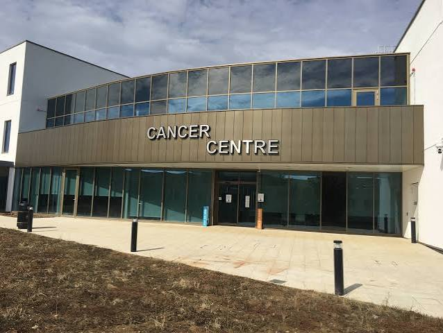

Latest News & Updates

New Cancer Centre in Dar es Salaam
Advanced cancer treatment facility designed to treat 100 patients per day with world-class expertise.
Read More →
Leadership Recognition
Dr. Zeenat Sulaiman Khan re-elected to International Hospital Federation Governing Council.
Read More →Presidential Visit
President Andrzej Duda of Poland visits Trinity Hospital highlighting collaborative efforts in emergency care.
Read More →